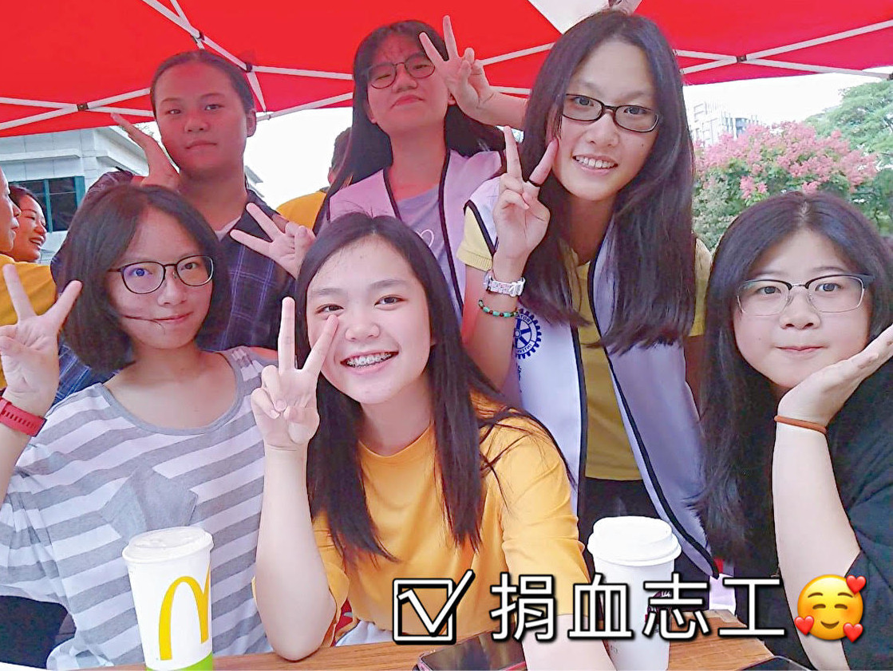
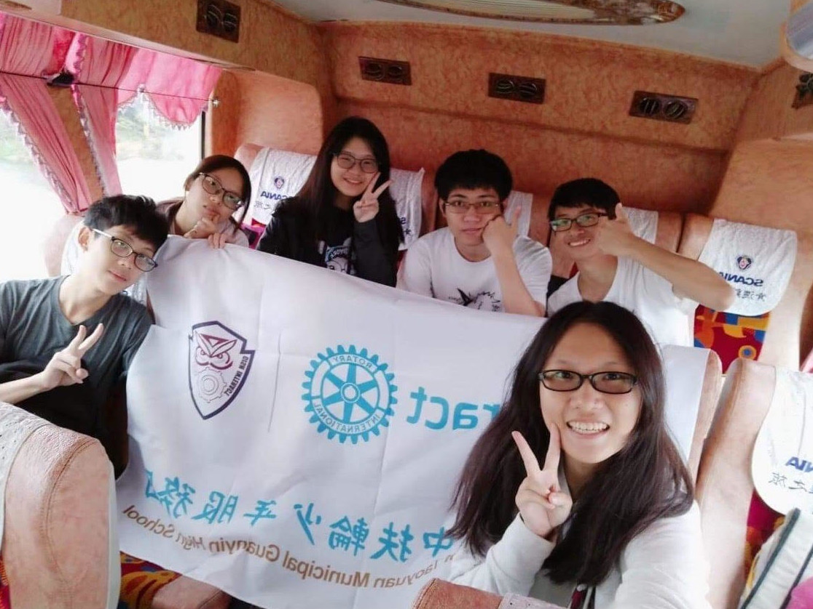
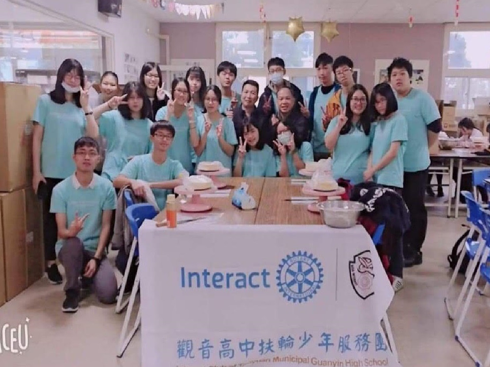
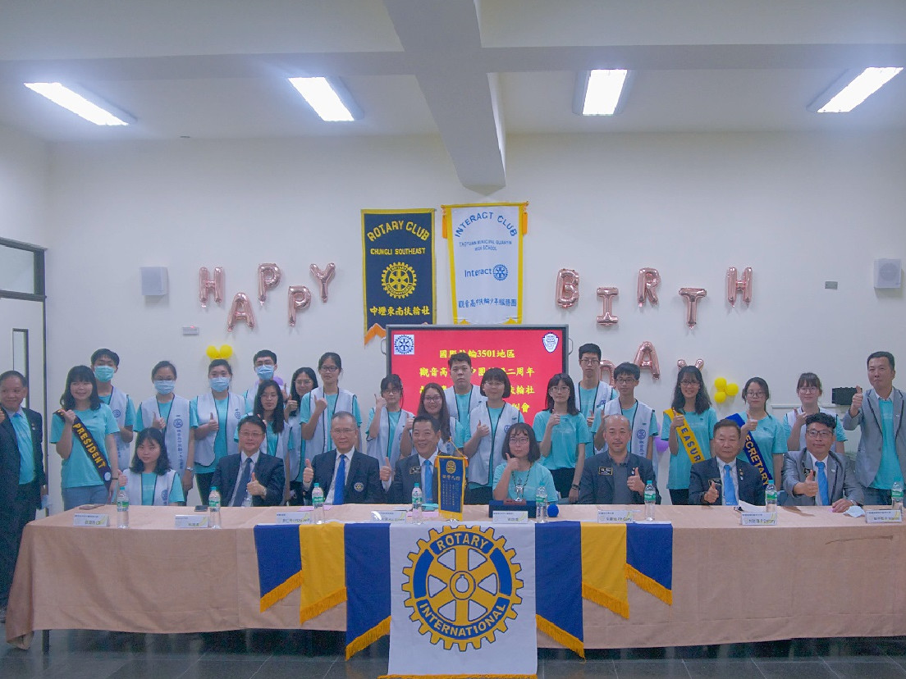

2019.10.13 — 捐血志工日
開學過後的第一次活動！
雖然後天就要段考了，不過大家還是很有愛心的來當捐血志工💜
很高興這次跟平楊團&啟英團一起當這次的志工ヾ(｡>﹏<｡)ﾉﾞ✧*。

2019.11.03 — 淨灘
大家都早早起床搭火車前去新竹！
到了沙灘非常開心的跟其他團交流(*´ω｀*)
活動正式開始之後超級認真的在撿垃圾
不過資訊長 ( 就是我 ) 超廢XD
因為沒有手套只好在旁邊拍照(●´ϖ`●)
大家都很認真的撿垃圾
連卡在石頭下面的也都撿起來了
大家超棒der✨
非常感謝這次邀請我們的湖口高中團！

2020.01.17 — 第一次活動
感謝各個社團特地抽空來參與我們第一次辦的活動！
還有參與企劃書製作以及討論的各個幹部還有老師們，雖然我們一直爭吵不休，最後仍然把這個活動呈現的很完美
在練習跳舞的時候大家都很努力，但因為第一次上台表演有一點失誤，我們還是很厲害！(๑•̀ㅁ•́๑)✧
請期待我們下一次的活動！

2020.04.19 — 授證典禮✨
感謝大家踴躍的參與，希望接下來我們觀音高中扶少團會更好！

2020.08.16 — 3501地區幹部訓練與迎新活動
今天的幹訓、迎新真的非常有趣！
一早就從中壢搭火車到竹南
雖然路程遙遠 不過還是很值得的
從早上的講習到下午的迎新
都讓我們更了解扶少團的運作
也認識了很多不熟悉的學校
每位地區代表也都很可愛
一直帶動大家 就是為了讓我們玩的開心、更熟悉彼此！
非常開心能夠來這次的活動🥰

2020.11.1 —觀音x啟英扶少聯合迎新
觀音x啟英扶少聯合迎新
首先先感謝各位uncle untie們的蒞臨🥳
謝謝uncle untie們的指正與教導
也謝謝所有到場的團員們
有了你們才有這次的活動 🥰
因為準備時間沒有很多
所以這次的活動可能有一些小小的突槌
但是在那麼短時間內能做到這樣已經很棒了！
辛苦爆肝兩個禮拜的幹部們了
希望大家應該都有玩的開心餒🥳
也希望經過這次的活動辦理
我們能夠變得更好 帶給大家更完善的活動！😍
🎊！觀音x啟英扶少迎新成功！🎊